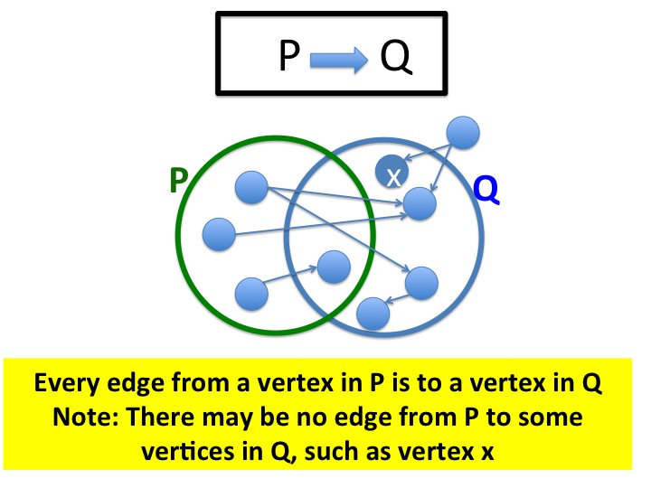
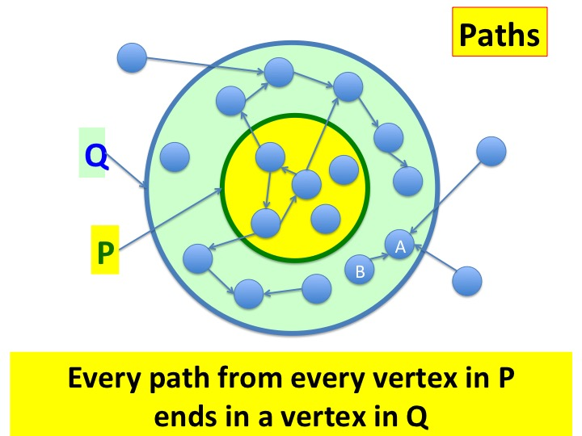
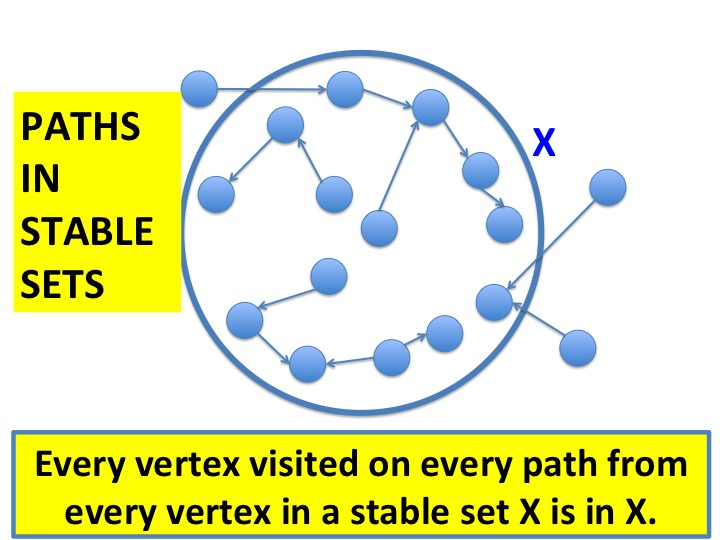
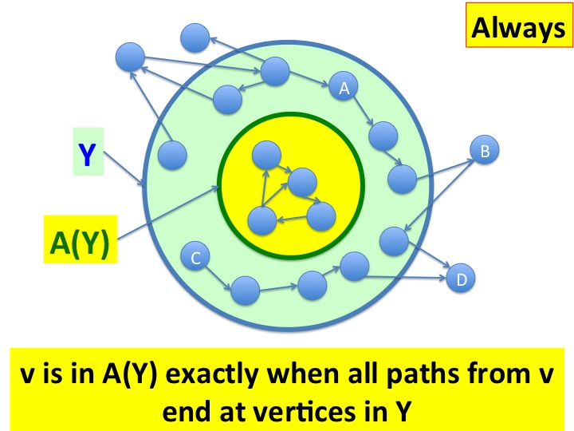

This module shows how state-transition systems are represented as
directed graphs.
A system is safe if all paths from initial states
of the system remain in safe states. This module defines all the
concepts that we use in this course to prove that a system is safe.
We prove that a system is
safe by using the concepts of stable, and
invariant,
which are introduced here. We specify systems using always
and next which are defined in this module in terms of
graphs and also
Computation Tree Logic (CTL).
Representing a System by a Graph
We represent the states and state transitions of a system by a
directed graph
in which vertices represent states and edges
represent transitions. A system trajectory is a path through the
graph.
When we design algorithms we will prove that the system always
remains in safe states.
We prove that a system is safe by showing that all paths from
vertices representing initial states only visit vertices
representing safe states.
Of course, we require that initial states are safe.
Graphs
Let \(G = (V, \rightarrow) \) be a directed graph where \(V\) is the
set of vertices and \(\rightarrow \) is a binary
relation on vertices that specifies the set of
edges:
\(v \rightarrow w\) indicates that there
is an edge from vertex \(v\) to vertex \(w\) in
the graph.
We use the notation
\(\stackrel{*}{\rightarrow}\)
to denote the transitive closure of
\(\rightarrow\).
So, \(v \stackrel{*}{\rightarrow} w\) holds exactly
when there exists a path from \(v\) to \(w\) in
the graph. We assume that there exists a path, with zero hops, from each
vertex to itself.
\(\forall v: \; v \rightarrow v \).
We use upper case \(P, Q, R, X, Y\) to refer to sets of vertices,
and lower case \(u, v, w \) to refer to individual
vertices.
All formulae containing these terms are
implicitly universally qualified.
Relations between Vertex Sets
\(P \rightarrow Q\)
We extend the relation \(\rightarrow\)
to sets of vertices as follows.
\(P \rightarrow Q\) holds exactly when every edge from every vertex in
\(P\) ends at a vertex in \(Q\).
\(
\forall v \in P: (v \rightarrow w) \; \Rightarrow \; (w \in Q)
\)
>
Fig.2 - Illustration of \(P \rightarrow Q\)
The diagram illustrates \(P \rightarrow Q\). The diagram shows that
there may be vertices in \(Q\), such as vertex \(x\), for which
there is no edge from \(P\).
Example of \(P \rightarrow Q\)
\(
\{2, 3\} \rightarrow \{4, 5, 6\}
\)
Explanation: All outgoing edges from vertices \(2\) and \(3\)
terminate at vertices in \(\{4, 5, 6\}\).
\(P \stackrel{*}{\rightarrow} Q\)
We extend the relation \(\stackrel{*}{\rightarrow}\)
to sets of vertices in the same way.
\(P \stackrel{*}{\rightarrow} Q\) holds exactly when every path
from every vertex in \(P\) ends at a vertex in \(Q\).
Therefore
\(P \stackrel{*}{\rightarrow} Q\) holds exactly when all vertices
reachable from vertices in \(P\) are in \(Q\).
\(
\forall v \in P: (v \stackrel{*}{\rightarrow} w) \; \Rightarrow \; (w \in Q)
\)
>
Fig.3 - Illustration of \(P \stackrel{*}{\rightarrow} Q\)
In the diagram, all the vertices in the outer circle are in
\(Q\). Both vertices in the green area and the yellow area are in
\(Q\). The vertices in the yellow area are in \(P\).
\(P \stackrel{*}{\rightarrow} Q\) holds when all paths from vertices
in \(P\) are in \(Q\). The graph shows that no path from the yellow
area can escape the outer circle.
\(P\) lies entirely within \(Q\) because there are zero-length paths
from each vertex in \(P\) back to itself (and so \(P
\stackrel{*}{\rightarrow} P\)) and these paths must lie
inside \(Q\).
There may be a vertex \(w\) in \(Q\)
which has an edge to a vertex outside \(Q\). Then there can be no
path to \(w\) from \(P\) because, in that case, there would be a path from \(P\)
to outside \(Q\).
Example of \(P \stackrel{*}{\rightarrow}
Q\)
\(
\{1, 2\} \rightarrow \{1, 2, 4, 5, 6, 7\}
\)
Explanation: There is a zero-hop path from vertex \(1\) back to
itself, and from vertex \(2\) back to itself. There are paths from
\(2\) to \(4\) and \(5\), and there are paths from \(1\) to \(6\) and
\(7\). There are no paths from \(1\) or \(2\) to \(0\) or \(3\).
Safety Proof Obligation
Let \(init\) be the set of initial vertices and \(safe\) be the set of
safe vertices.
To prove that a system is safe, we must show
that:
stable is a function from sets of vertices to the Booleans.
\(stable(P)\) holds exactly when every edge from a vertex in \(P\) is
to a vertex in \(P\).
\(
stable(P) \; \equiv \; (P \rightarrow P)
\)
>
Fig.4 - Paths from a stable set remain in the set
There are no paths from inside a stable set to outside the set because
there are no edges from inside to outside the set. One can think of
paths from a stable set as being trapped inside the set. There may,
however, be paths from outside a stable set into the set as shown in
the diagram.
From the definition, \(stable(P)\) holds exactly when all paths from vertices
in \(P\) are in \(P\).
\(
\textit{stable}(\{4, 5\})
\)
Explanation: Every outgoing edge from vertex \(4\) is to vertex \(5\)
which is in set \(\{4, 5\}\), and every
outgoing edge from vertex \(5\) is to vertex \(4\)
which is in set \(\{4, 5\}\).
How to Prove Safety: Invariant
We prove safety
by finding a stable vertex set \(I\) such that:
\(
init \subseteq I \subseteq safe \quad
\) eqn 2
>
Fig.5 - Illustration of Invariant I
Any stable vertex set \(I\) that satisfies equation 2, \(init
\subseteq I \subseteq safe\), is called an invariant of the
graph. Because \(I\) is stable, all paths from \(I\) remain within
\(I\). So all paths from \(init\) remain within \(I\). Therefore,
all paths from \(init\) remain within \(safe\).
We discharge our safety proof obligation by finding an
invariant.
A system may have many invariants; all we have to do is find any one.
We write \(invariant(I)\) to denote that \(I\) is an invariant of the
given graph.
Always
always is a function from sets of states to
sets of states.
Let \(Y\) be a set of states. "always\(\; Y\)."
is the set of states defined as follows:
\(v\) is in \(always(Y)\) exactly when all vertices in all paths from
\(v\) are in in \(Y\).
\(
v \in always(Y) \quad \equiv \quad
\forall w : (v \stackrel{*}{\rightarrow} w) \; \Rightarrow \; (w \in Y)
\)
>
Fig.6 - Illustration of always
The vertices in the outer circle are in \(Y\).
The vertices in the yellow circle are the vertices in \(always(Y)\). All
paths from vertices in the yellow circle end inside the outer
circle. For example, vertex A is not in \(always(Y)\) because there is a
path from vertex A to vertex B which is outside \(Y\). Likewise,
vertex C is not in \(always(Y)\) because of the path from C to D.
From the definition, it follows that \(always(Y)\) is the largest set \(X\)
of vertices such that \(X \stackrel{*}{\rightarrow} Y\), i.e.
We prove safety by proving (equation 1: \(init \stackrel{*}{\rightarrow} safe\))
where \(init\) and \(safe\) are the initial and safe sets of vertices,
respectively. This is
equivalent to proving:
\(
[init \; \subseteq \; always(safe)]
\)
Lemma
\(always(Y)\) is the largest set \(X\) such that:
\(X \subseteq Y\) and \(stable(X)\).
The proof follows directly from the definition.
next
\(next\) is a function from sets of states to
sets of states.
Let \(Y\) be a set of states.
\(next(Y)\) is the set of states defined as follows:
\(v\) is in \(next(Y)\) exactly when all edges from \(v\) terminate at
vertices in \(Y\).
\(
v \in next(Y) \quad \equiv \quad
\forall w : (v \rightarrow w) \; \Rightarrow \; (w \in Y)
\)
Definitions in terms of CTL
A vertex \(v\) is in \(always(X)\) exactly when all paths from \(v\)
are globally in \(X\), which can be denoted as \(AG(X)\) where \(A\)
stands for along all paths, and \(G\) stands for
globally in CTL Likewise,
\(next(Y)\) is equivalent to in "all paths from the current state
the next state is in \(Y\)", or \(AX(Y)\) where \(X\) stands for "in
the next state" in CTL.
You will find excellent examples illustrating how model checking is
carried out on CTL specifications. See, for instance,
Martin Fränzle.
Lemma
\(next(Y)\) is the largest set \(X\)
of vertices such that \(X \rightarrow Y\), i.e.
We discussed all the concepts used to prove safety in this course.
We showed how state-transition systems are represented as directed
graphs. We showed how safety can be defined in terms of edges and
reachability in graphs. We defined the concepts --- stable and
invariant --- which we use to prove safety, and
always and next which we use to specify systems.
 >
>
 >
>